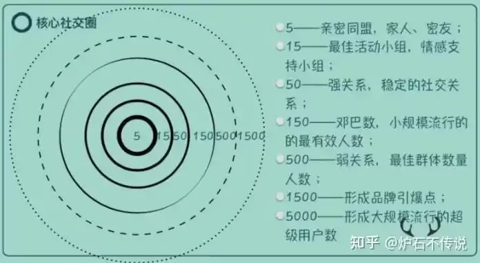

邓巴数字，又称"150定律"
由英国牛津大学人类学家罗宾·邓巴于20世纪90年代提出。该定律认为人类受大脑新皮层认知能力限制，可维持的稳定社交网络人数上限约为150人，其中深入交往的核心群体约20人。讨论邓巴提出，社交网站用户的实际活跃互动人数远低于其好友总数，例如男性的主动交流对象通常为7人，女性为10人。人类社交圈呈现分层结构：5个至亲、15个好朋友、50个普通朋友、150个重要联系人，这种模式在狩猎采集社会和现代组织中均有体现。不同年龄段的社交规模呈规律性变化，青春期至二十余岁达顶峰，三十余岁趋于稳定，60岁后显著减少。
而当网络社交群体超越30人后，这一规模恰好跨越了邓巴分层中“15人好朋友圈”与“50人普通朋友圈”之间的临界点，群体的互动结构会发生质变。成员间原本可能建立的全通道式深度情感交流将难以维系，关系开始非人化与功能化。核心的亲密情感支持与高频有效沟通会迅速向更小的“防御性小群”迁移，大群则逐渐蜕变为一个信息广播与弱连接的广场。同时，社会惰化效应显现，责任分散导致个体参与感降低，沉默的螺旋使大批成员沦为旁观者。此时若缺乏明确的规则或共同任务，群体极易走向沉寂，或分裂为数个互不交叠的密友子群。
由英国牛津大学人类学家罗宾·邓巴于20世纪90年代提出。该定律认为人类受大脑新皮层认知能力限制，可维持的稳定社交网络人数上限约为150人，其中深入交往的核心群体约20人。讨论邓巴提出，社交网站用户的实际活跃互动人数远低于其好友总数，例如男性的主动交流对象通常为7人，女性为10人。人类社交圈呈现分层结构：5个至亲、15个好朋友、50个普通朋友、150个重要联系人，这种模式在狩猎采集社会和现代组织中均有体现。不同年龄段的社交规模呈规律性变化，青春期至二十余岁达顶峰，三十余岁趋于稳定，60岁后显著减少。
而当网络社交群体超越30人后，这一规模恰好跨越了邓巴分层中“15人好朋友圈”与“50人普通朋友圈”之间的临界点，群体的互动结构会发生质变。成员间原本可能建立的全通道式深度情感交流将难以维系，关系开始非人化与功能化。核心的亲密情感支持与高频有效沟通会迅速向更小的“防御性小群”迁移，大群则逐渐蜕变为一个信息广播与弱连接的广场。同时，社会惰化效应显现，责任分散导致个体参与感降低，沉默的螺旋使大批成员沦为旁观者。此时若缺乏明确的规则或共同任务，群体极易走向沉寂，或分裂为数个互不交叠的密友子群。
